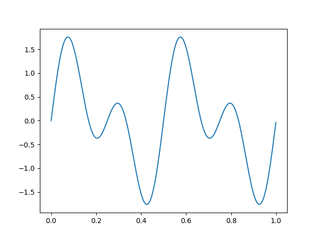
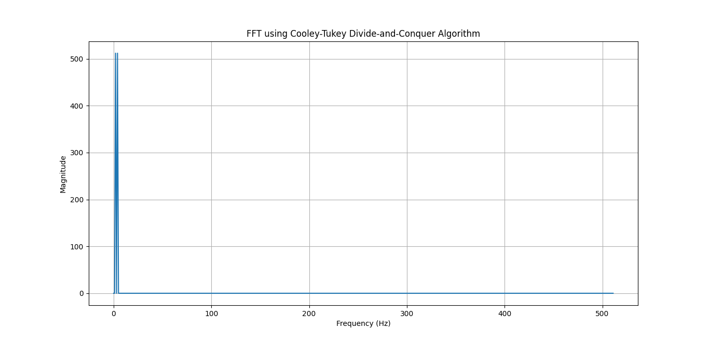

FFT using Cooley-Tukey Algorithm
Python Code:
import numpy as np
import matplotlib.pyplot as plt
def cooley_tukey_fft_dc(x):
N = len(x)
if N == 1:
return x
if np.log2(N) % 1 > 0:
raise ValueError("Input size must be a power of 2")
even_part = cooley_tukey_fft_dc(x[0::2])
odd_part = cooley_tukey_fft_dc(x[1::2])
twiddle_factors = np.exp(-2j * np.pi * np.arange(N) / N)
result = np.zeros(N, dtype=complex)
half_N = N // 2
for k in range(half_N):
t = twiddle_factors[k] * odd_part[k]
result[k] = even_part[k] + t
result[k + half_N] = even_part[k] - t
return result
N = 1024
t = np.linspace(0, 1, N, endpoint=False)
freq1, freq2, freq3, freq4, freq5 = 10, 20, 30, 40, 50
signal = (5*np.sin(2 * np.pi * freq1 * t) +
4*np.sin(2 * np.pi * freq2 * t) +
3*np.sin(2 * np.pi * freq3 * t) +
2*np.sin(2 * np.pi * freq4 * t) +
np.sin(2 * np.pi * freq5 * t))
fft_result = cooley_tukey_fft_dc(signal)
frequencies = np.fft.fftfreq(N, d=t[1] - t[0])
plt.plot(t, signal)
plt.figure(figsize=(10, 5))
plt.plot(frequencies[:N//2], np.abs(fft_result[:N//2]))
plt.title("FFT using Cooley-Tukey Divide-and-Conquer Algorithm")
plt.xlabel("Frequency (Hz)")
plt.ylabel("Amplitude")
plt.grid()
plt.show()
Output:
Enter 1st Frequency : 2
Enter 2nd Frequency : 4

